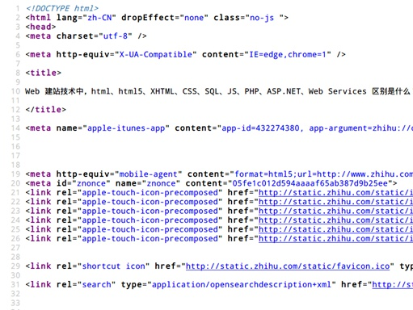
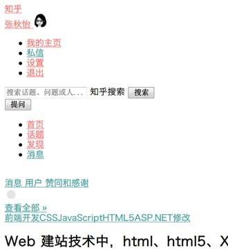
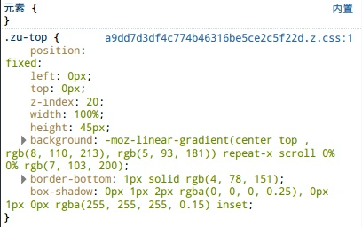
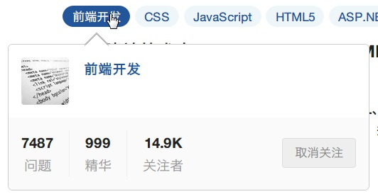
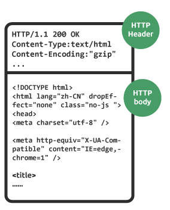
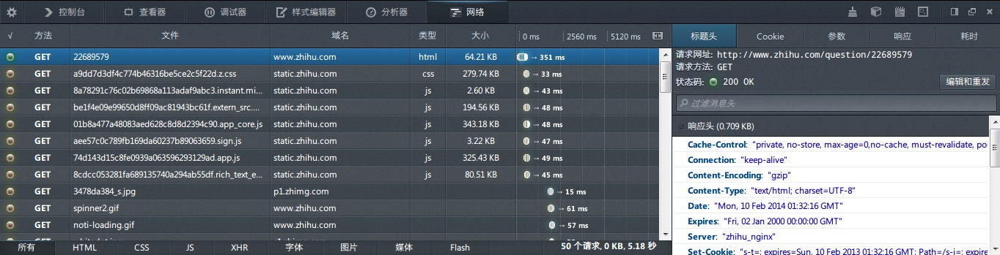
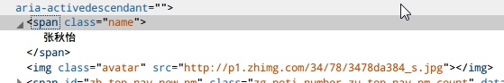

-- 跟随标准与Webkit源码探究DOM -- 获取元素之getElementsByClassName
按照类名获取元素 -- getElementsByClassName（HTML5）
标准
WHATWG 在Document与Element上均有定义，原型 HTMLCollection getElementsByClassName(DOMString classNames)，并定义了匹配算法和类名的提取算法，注意这里是先从参数里提取出类名作为一个set，然后再开始匹配的。其中指明了在quirks mode下类名大小写不敏感，否则大小写敏感
DOM 4（Document，Element ）基本和WHATWG一致
注意点
按照标准里的说法，“Unless otherwise stated, a collection must be live. ”。既然标准没有指明getElementsByClassName的返回值说是static的，那么它返回的HTMLCollection就是live的。
WHATWG描述getElementsByClassName的实现是先从参数里用ASCII空白字符分割出类名，将得到的类名组成一个有序集合之后，将能够匹配集合内所有类名的元素返回。除非在quirks mode否则大小写敏感，Document及Element上均有定义。
兼容性
属于HTML5新出现的API，IE9+ 及其他浏览器的现行版本均支持
WebKit代码分析
和之前的几个方法一样，在ContainerNode里实现，使用ClassNodeList作为NodeListsNodeData::addCacheWithAtomicName<>的template specialization。之前的一次commit将nodeMatches改为了elementMatches，不过github上的mirror里似乎ClassNodeList还没改掉。ClassNodeList的nodeMatches过滤标准（参考WebCore/dom/ClassNodeList.h）为：
复制代码
if (!element->hasClass())
return false;
if (!m_classNames.size())
return false;
// FIXME: DOM4 allows getElementsByClassName to return non StyledElement.
// https://bugs.webkit.org/show_bug.cgi?id=94718
if (!element->isStyledElement())
return false;
return element->classNames().containsAll(m_classNames);
复制代码
可以看到里面目前有个多余的StyledElement判定……这里首先判断要过滤的元素有没有class或者传入的字符串是否不含有效的class，接着检查元素是否为StyledElement（找不到相关文档，不过Node.h里的enum ConstructionType可以看出哪些元素是StyledElement）。
类名的提取实现在SpaceSplitString。ClassNodeList和ElementData均有SpaceSplitString的m_classNames来维护类名集合。这些外部的类通过调用SpaceSplitString::set来更新和设置类名，而SpaceSplitString::set又调用SpaceSplitStringData::create来维护存有集合的私有成员SpaceSplitStringData m_data。
SpaceSplitStringData::create有两个重载，外部调用的是SpaceSplitStringData::create (const AtomicString& keyString)。里面首先调用维护缓存的spaceSplitStringTable（实质是一个static的hashmap）来检查是否已经有缓存，如果没有则开始创建集合。 WebCore/dom/SpaceSplitString.cpp里的tokenizeSpaceSplitString实现了将类名字符串tokenize的算法，并且每分解出一个token，就会调用参数tokenProcessor的processToken。SpaceSplitStringData::create (const AtomicString& keyString)首先以TokenCounter作为tokenProcessor调用tokenizeSpaceSplitString，将类名字符串先扫描一次统计token数目以方便分配内存，接着调用重载的SpaceSplitStringData::create(const AtomicString& keyString, unsigned tokenCount)，里面使用TokenAtomicStringInitializer作为tokenProcessor再扫描一次字符串，将每个token的内容保存到分配好的内存里。
判断匹配的算法就比较粗暴了……参见WebCore/dom/SpaceSplitString.cpp的containsAll和WebCore/dom/SpaceSplitString.h的contains会发现，居然是线性查找套线性查找的O(mn)（m和n分别为要查找的类名数和被查找的元素的实际类名数）……不过考虑到应用场景下一般类名很少，多点也就五六个了，被查找的类名可能更少，乘起来mn可能最多也就二三十左右，一般大概不会超过十，此时用高级数据结构带来的overhead可能还大过简单的线性查找，所以这样实现也是合理的。
--跟随标准与Webkit源码探究DOM -- 获取元素之getElementById
按照ID获取元素 -- getElementById
标准
DOM 1，定义在HTMLDocument Interface 中，原型Element getElementById(in DOMString elementId)，当不存在拥有对应ID的元素时返回null，该方法不会抛出任何异常。
DOM 2，移动到了Document（原HTMLDocument的Parent Interface），原型不变。
DOM 3 特别声明浏览器应当使用Attr.isId判断 Attr 是否为 ID，同时加了一句“Attributes with the name "ID" or "id" are not of type ID unless so defined.”，这是针对IE7-会将name为"id"的元素也一并返回的错误实现增加的说明
WHATWG 将getElementById 放到了 NonElementParentNode里，因此实现了NonElementParentNode的DocumentFragment也拥有这个方法（而W3C的标准里，DocumentFragment仅仅继承了Node，不应该有此方法）
DOM 4 目前与 WHATWG 相同
注意点
注意 getElementById 的名字里没有全大写的 ID，而是id。
目前浏览器中 getElementById 仅定义在Document 和 DocumentFragment上，WHATWG的文档里提到没有添加到Element是为这个特性会挂掉未使用sizzle前的jQuery（<=1.2.6）的单元测试（旧版jQuery使用了elem.getElementById来判断元素是否为Document），参见邮件列表上的讨论。
没有插入 DOM （如用appendChild）的元素是无法用该方法搜索到的。由于前面提到的WHATWG与W3C标准的不同，现实中浏览器里的DocumentFragment也可以用此方法搜索元素。
一些浏览器会将带有id的元素创建成全局变量（比如id="foo"的元素会以window.foo出现在javascript runtime），并且为了向后兼容所以一直保留这个特性，但是它不在标准里，而且全局变量很容易被覆盖，应该尽量避免使用。
标准里写明了当存在多个拥有对应 id 的元素时，浏览器的行为是未定义的，但是大多数浏览器都选择返回第一个拥有该 id 的元素。至于什么是“第一个”，就要看浏览器实现中的DOM树是怎么遍历的了。 WHATWG 里描述的是tree-order，即先序的DFS。
检查方法：
复制代码
Document
--跟随标准与Webkit源码探究DOM -- 获取元素之getElementsByTagName
按照标签名获取元素 -- getElementsByTagName
标准
DOM 1在Element和Document两个interface中均有定义，原型NodeList getElementsByTagName(in DOMString tagname)，指明按照先序遍历遇到的顺序排列，不会抛出任何异常，参数"*"返回对应document或者element下所有元素。注意这里指明返回的是一个live的仅含有Element的NodeList。
DOM 2里定义仍在Element和Document，增加了带namespace的NodeList getElementsByTagNameNS(in DOMString namespaceURI, in DOMString localName)（Element，Document），引入了localName的概念（只有ELEMENT_NODE和ATTRIBUTE_NODE才能有）。
DOM 3（Document，Element）特别声明XML应当对标签名的大小写敏感，非XML则依照文档类型自己对待大小写的风格来决定是否敏感。实际上浏览器对HTML都会先将标签转统一换成成小写后再去匹配，所以只能匹配到实际标签名为小写的元素。
WHATWG （Document ,Element）将返回类型修改为了HTMLCollection，并解释了通过localName产生HTMLCollection的算法。注意算法的第二步实际上规定了在非HTML文档里，标签名大小写敏感；而在HTML文档里，任何大小写的标签都会被统一转换成小写后再去匹配，所以只能匹配到实际标签名为小写的元素。
DOM 4（Document，Element） 目前与 WHATWG 基本一致
DOM Tree Accessors
DOM 1 与 DOM 2 的 HTMLDocument interface 里定义了一系列"DOM Tree Accessors"
readonly attribute HTMLCollection images
readonly attribute HTMLCollection applets
readonly attribute HTMLCollection links
readonly attribute HTMLCollection forms
readonly attribute HTMLCollection anchors
attribute HTMLElement body
这意味着在HTML文档里可以用document.images获得所有元素，用document.links获取所有带有href属性的元素，用document.links获取所有带有name属性的元素，用document.forms获取所有
--Web开发入门知识小总结
原来是写给 http://www.zhihu.com/question/22689579 的答案，也算是学了一学期web课程后的一点小总结，搬运到博客里存一下吧~
===============================================================
首先要知道网站访问大概是什么个过程：
假设你在浏览器地址栏输入这个问题的地址
http://www.zhihu.com/question/22689579
访问过程和下图差不多，浏览器和服务器交流，服务器和数据库交流（有时候数据库就在服务器那台机子上）
HTML 与 CSS
你家电脑拿到一个 html （就是上图 HTTP 响应的 body 里的内容）之后，就会对它进行解析渲染。HTML 就是一种标记语言。类比一下，大家在论坛上经常会用一些代码来添加富文本内容，举一些栗子：
图片地址
用来贴图
超链接
用来贴地址
呵呵
表示标签里的文字应该被删掉（默认添加删除线效果）
这种论坛代码也是一种标记语言，HTML 的作用就和它差不多。服务器返回给你的html文件里面，写的是一些代码，大概是这样的：

浏览器拿到这些代码之后，分析一下给你渲染好页面显示出来，如果不用css，效果是这样的，按照浏览器默认的样式显示出列表、图片、超链接、输入框、按钮等等：

是 不是觉得默认样式有点看瞎狗眼呢……所以很多时候我们需要自定义样式，现行通用的规定样式的语言是CSS，我们可以用它写一些定义样式的代码，然后在 html 文件里用一个标签把这些规定样式的 CSS 代码与表达内容语义的 HTML 代码关联起来，然后你就能看到一个符合人类正常审美的页面了:
CSS 代码的格式基本是
属性:值
比如知乎顶上那个蓝色的导航条，它的 CSS 大约是这样的

第一个属性对应的代码翻译成人话，就是它的位置（position）应该是不动（fixed）的，浏览器会兢兢业业地去实现这段代码要求实现的效果， 所以你在页面上翻来翻去顶上那个导航条都会死死地黏在窗口顶部不跟着滚动。
再拿里面的其他几个属性做栗子解释一下就是：
left 和 top 为零指明这个导航条要紧贴着窗口的左上角
width 和 height 指定这个导航条的宽和高
background 指明这个导航条的背景是一种渐变的蓝色
浏览器就会根据这些 CSS 代码，“画”出对应的样式。
HTML 5 与 XHTML
像 人的语言一样，网络上的网页里的 HTML 代码也不一定是标准的，好比有时候你发音不太标准，别人会去猜测你说的到底是什么一样，有些时候前端程序猿不小心写错了 HTML，浏览器也会试图猜测他们原来想写的是什么，做对应的渲染，而猜是要有一个常识做依据的。加上有些浏览器支持一些标签，有一些又不支持，以及其他 混乱的情况，为了防止大家鸡同鸭讲，我们需要对 HTML 代码里能有什么标签，标签怎么写，标签可以有什么属性这些东西有一定的共识，建立一个通行的标准，HTML5 就是其中一个比较新的标准。这个标准新加了很多可以用的标签和属性，然后各大浏览器也吭哧吭哧按这个标准去实现了很多这些新加的标签和属性，本来前端程序 员要写一堆代码去实现的效果，现在浏览器都给你实现好了，只要写两三行，调用一下浏览器给你实现的部分就能搞定，简单愉快，所以很多人都在热情地推广这个 标准~（当然新标准也不可能是完美的，总会有一些问题，怕跑题这里按下不表~）
至于 XHTML，就是 HTML 的近亲 XML 和 HTML 自己的杂交品种，对语法要求比较严格，并且为了兼容 XML，在语法上与 HTML 有一些不同~
JavaScript 与浏览器脚本
有 了表示内容和语义的 HTML，规定样式的 CSS，得到的是一个静态的页面，没什么动画（其实用 CSS 还是可以有一些动画的，不过这个跑题了），按 F5 才会刷新数据，都 21世纪了，这么呆板单调的网页怎么能展现我大智人种族的创造性口胡！于是我们有了 Javascript（JS） 来给页面添加一些动态的效果，比如知乎问题的标签，鼠标移上去会弹出一个小窗口，这个就是 JS 实现的效果啦。

浏览器都会帮你实现一些 JS 可以用的工具（函数，对象什么的），你只要写一些 JS 的代码，保存在 xxx.js 里，在 html 文件中用 (script) 关联进来就可以用了，像上图这个效果应该就包括了
鼠标悬停到标签上时创建一个新的
小窗口
用 JS 向知乎服务器发送一个请求，得到这个小窗口应该显示的数据，放在这个小窗口里（这就是所谓的AJAX，不用刷新就能与服务器进行交互，更新页面的一小部分~）
浏览器拿到这样的代码，就会解析并实现出相应的效果，楼主问的浏览器脚本，指的就是这样子的代码。其实用来写浏览器脚本的，也不是非得JavaScript 不可，当年还为到底用什么语言写这种代码有过一段战火纷飞的时期，但现在尘埃落定，各大浏览器都默认了：请用 JS 写这些动态效果的代码给我解析~
以上就是前端部分的内容，下面简述一下后端的东西吧> <
Web Server 和 Web Services
浏览器给服务器发一个请求，服务器不是一看就知道怎么响应的。首先这些请求和响应要有一个通用的写法，也就是要有一个协议，常用的是 HTTP 协议。
像 最前面的图，服务器的响应写了一个状态码 200 OK ，是 HTTP 协议里约定俗成的一个东西，服务器写 200 OK 在响应里，表示“你请求的这个东西我有”，如果是404 Not Found，就是“你请求的这个东西我这里没有”（有时候潜台词是：“你被墙了”……）。
HTTP 响应里还包括很多东西，比如 Content-type 表示服务器发过来的文件类型是什么（文本？动画？图片？音频？），这样发过去了人家浏览器好知道怎么展示给用户看。人家服务器怎么知道按协议要写什么东西 进去呢，这就是 Web Server 干活的时候了。
形象化一下HTTP响应，大概就长这样：

再上个锤子，浏览器和服务器之间请求响应的过程大致是长这样的，右下角的那些东西就是由 Web Server 生成的（服务器脚本可以做一些改动，但这些一般是 Web Server 的份内活）：

再比如说很多时候你访问一个网站，浏览器里输的地址并没有写明你请求的文件，比如这个问题的地址是：
http://www.zhihu.com/question/22689579
但知乎的服务器其实返回了一个html给你，服务器怎么知道这个地址对应要返回什么样的 html 代码给你的？也是 Web Server 干的活。
除了浏览器输地址敲回车这种赤裸裸的访问，客户端与服务器的交互还有很多种，比如：
前面提到的用 JS 完成的 AJAX，有点像浏览器和服务器之间的悄悄话~
还有其他应用软件与服务器的交互，比如：
微信、QQ 与腾讯的服务器的交互
网游客户端与网游公司服务器的交互
搜索引擎用来搜集网页信息的程序（爬虫）与各种各样的网站服务器的交互
只要你知道用什么地址访问、怎样访问人家的服务器，并且有相应权限，你也可以自己写一些程序去和他们的服务器交互（比如用微博API - 新浪微博API获取微博，开发第三方应用或者做数据分析）。
从这些栗子里可以看出，客户端与服务器的交互的主体、客体、载体是五花八门的：
服务器可以是大型机也可以是个人电脑，只要能跑相应的程序就行
客户端像前面举的栗子里一样，可以是各种软件，而且这些软件不一定运行在个人电脑上，也可以是手机、平板、智能穿戴设备等等
有时候不是传生成好的 HTML 或者其他服务器上已经有的文件，而是传输经过一定逻辑处理后生成的字符串或者其他各种封装好的数据
像 前面提到的 HTML 需要有一定标准一样，为了防止混乱和鸡同鸭讲，我们又需要先对这些机器需要怎么交互达成一定共识，再让它们进行交流。人与人之间通信，需要先有一种大家都 认识的写法（比如简体字/繁体字）和一种彼此都懂的语言（比如普通话/广东话）。要让这些形形色色的机器能够通过网络进行交互，我们就需要指明一种协议 （比如 HTTP/HTTPS）和一种数据封装格式（比如 HTML/XML），Web Server 提供的 Web Service，指的就是这种协议+格式的交流体系。不过 Web Service 的生态系统和 HTML 的标准不一样，用户可以选择的协议和数据封装格式更多，普通的网站访问用的 HTTP + HTML 只是其中一种，一些封闭系统内的交流还可以自己定义一个协议和格式来用（比如 QQ）。
Web Service 传输的数据再经由本地客户端（浏览器、QQ/微信，网游客户端等）的分析渲染，就能够以普通人能够理解的形式展现出来。此外还有一些 Web Service 并不是为普通用户设计的，像前面提到的微博API，是用来给程序猿进行二次开发的~
除 了提供 Web Service， Web Server 还会兼顾很多功能，包括提供缓存，平衡负载，这样在访问量比较大的时候能有有条不紊地接客。常见的现成的 Web Server 有开源的 Apache、Nginx和微软的IIS，你也可以用一些工具（比如 Node.js ）自己定制一个。
PHP ，服务器脚本，Web Framework
开 头那张图里服务器接到请求之后可以给访客发送对应的文件，但21世纪的服务器怎么可能只会“接请求-发文件”这么弱智的一招呢，人家还可以处理你上传来的 文件的！还可以接受你发过来的各种请求，去操作服务器本地的文件or数据库的！要干这些事，自然服务器那边也少不了要有代码了，这些代码就是服务器脚本。 前面说的 Web Service 传输的数据，主要也是由服务器脚本生成，再交由 Web Server ，按照某种协议套好整个响应的格式，返回给客户端的。
同一个网址，每个人看到的页面不一定是一样的，比如知乎首页的网址都是
http://www.zhihu.com/
但是没登陆和登陆之后看到的东西不一样，登陆之后每个人看到的导航栏的用户信息，关注的动态，都不一样。服务器脚本可以对这些不同的状态，生成不同的页面，交给 Web Server 返回给浏览器。
知乎的主页给大家看到的 html 整体来说是差不多的，都有导航栏，左边是关注的动态，右边是广告和边栏，每一块的整体构造大同小异，只是一些地方内容有所区别。服务器脚本就是利用已知的数据，在这些因人而异的地方填入相应的内容，生成给每个人看的页面。
比 如我的主页，导航栏右边的头像和名字跟别人看到的不一样，就是因为这块地方有一个放图片的标签和一个写名字 的标签，服务器脚本在查询本地的数据之后给我返回的页面里的标签填了我头像的图片链 接，标签里填了我的名字，给别人的页面就填其他链接、其他名字，这样每个人看到的页面就不一样了。

PHP 就是一种常见的用来写服务器脚本的语言，其实只要是能拿来写大家传输数据的通用接口（CGI）的语言都可以用来写服务器脚本（也就是说几乎所有编程语言都 可以写 = =b），只是因为现成工具的丰富程度和专攻程度不一样，所以有一些语言在写服务器端脚本的时候会比较热门。
为了方便，我们在 写服务器脚本的时候，通常还会用个同语言写的 Web Framework 来处理各种细节，防御一些常见的攻击，提供跨站认证（比如用已有的微博账号注册其他网站）的接口，利用cookie处理登陆状态和用户设置，生成网页模版 之类的。如果你用 C# 或者 Visual Basic 写服务器脚本，就可以用 ASP.NET 这个框架实现这些功能，帮你省点麻烦。不过现在不少人是反过来为了一个好用的 Web Framework 去选择它对应的服务器脚本语言的。
一个普通网站访问的过程
简单概括一下，对于我们普通的网站访问，涉及到的技术就是：
用户操作浏览器访问，浏览器向服务器发出一个 HTTP 请求；
服务器接收到 HTTP 请求，Web Server 进行相应的初步处理，使用服务器脚本生成页面；
服务器脚本（利用Web Framework）调用本地和客户端传来的数据，生成页面；
Web Server 将生成的页面作为 HTTP 响应的 body，根据不同的处理结果生成 HTTP header，发回给客户端；
客户端（浏览器）接收到 HTTP 响应，通常第一个请求得到的 HTTP 响应的 body 里是 HTML 代码，于是对 HTML 代码开始解析；
解析过程中遇到引用的服务器上的资源（额外的 CSS、JS代码，图片、音视频，附件等），再向 Web Server 发送请求，Web Server 找到对应的文件，发送回来；
浏览器解析 HTML 包含的内容，用得到的 CSS 代码进行外观上的进一步渲染，JS 代码也可能会对外观进行一定的处理；
用户与页面交互（点击，悬停等等）时，JS 代码对此作出一定的反应，添加特效与动画；
交 互的过程中可能需要向服务器索取或提交额外的数据（局部的刷新，类似微博的新消息通知），一般不是跳转就是通过 JS 代码（响应某个动作或者定时）向 Web Server 发送请求，Web Server 再用服务器脚本进行处理（生成资源or写入数据之类的），把资源返回给客户端，客户端用得到的资源来实现动态效果或其他改变。
注意这只是小网站里比较常见的模型，大网站为了解决规模问题还会有很多处理，每个环节都会有一些细微的差异，中间还会使用各种各样的工具减轻服务器的压力，提高效率，方便日常维护~
延伸阅读 —— 那些看花眼的名词
为了方便调试，很多 Web Framework 会自带一个简单的 Web Server，或者有些 Web Server 会自带一个简单的 Web Framework ，实际部署到服务器上开放使用的时候为了性能或者安全等多方面的考虑，可以把内置的 Web Server 换成其他的，比如 Apache 或者 Nginx （举个栗子，知乎用的是 Tornado 做 Framework，Server 换成了 Nginx，见知乎使用了哪些框架和开源库？）。如果是开源的东西，还可以在遵守开源协议的前提下自己改一下再用~
因为后端不像前端已经有 HTML + CSS + JS 这样的既定事实标准，服务器脚本与 Web Framework 的选择很多，所以新手会听到很多眼花缭乱的技术名词的地方多在这里~ 举一些栗子，早年常见的服务器脚本语言有：
开源的 PHP
Sun 公司的 JSP 中使用的 Java
微软的 ASP 中使用的 VBScript
现在在这方面的应用热起来的语言有
Python，对应常见的 Framework 包括知乎和Quora有用到的 Tornado（其实是自带 Framework 的 Web Server），社区很成熟的 Django （用户包括 Instagram、Pinterest）等
Ruby，一般都用 Rails 这个 Framework，用户包括 Github、早期的 Twitter 等
逆天的 JavaScript，有了 Node.js 这个平台，Web Server、服务器脚本和浏览器脚本全都可以用 JavaScript 来写……
微软家的则跟着 ASP.NET 转移到了C# 或者 Visual Basic
Erlang，擅长大规模的并发，不少游戏公司拿来写服务器，靠几十个工程师支撑几亿用户的WhatsApp也是用的这个~
虽然可以用的语言和所属体系五花八门，其实服务器脚本要做的事情本质上都差不多的，就好比自然世界中要表达“吃过了没”这句话的意思，你可以用各种各样的语言在各种各样的场景里表达出来~
--IE8/9的几个前端bug解决方案
最近做的东西需要兼容IE……啊真是令人忧伤……
解决低版本IE的buggy inline-block
低版本的IE只对本身inline的元素能用inline-block，而本身为block的元素需要设为inline。此外，如果想要让这个buggy的inline-block生效，还需要让元素具备hasLayout，常见的方法是设置zoom。如果想绕过低版本IE又保持对其他浏览器的兼容，可以这样：
.xx {
display: inline-block;
*display: inline; // IE7- only hack
zoom: 1;
}
参考Inline block doesn't work in internet explorer 7, 6
jQuery UI 1.7 的 Draggable 在 IE9 无法使用
哀伤地要使用jQuery UI 1.7 版本带的Draggable，但是在IE9下无法使用（i.e.完全不能用233 根本拖不了），原因是IE9的鼠标事件更新后旧版本的jQueryUI没有对它开例外，当成了更低版本的IE去处理，解决方法在这里：jQuery UI does not work on IE9
将_mouseMove的
if ($.browser.msie && !e.button)
改成
if ($.browser.msie && document.documentMode < 9 && !e.button)
为IE9及更高的IE添加例外即可
IE9下出现javascript无法正常生效，按F12后恢复正常
这是因为IE8/9默认没有console，所以如果代码里残留了类似console.log的引用就会报错，整个js挂掉，参见这里，解决方法是将带console的语句删掉（反正一般也是调试用的，删了无妨），或者用类似HTML5 Boilerplate里的解决方案
-- JavaScript: The Evil Parts - 1
最近在看JavaScript框架设计，在讲解类型判定的时候提到了一些“匪夷所思的情况”，不过没有明说都是什么时候会出现这些情况。自己玩儿了一下，写写随笔吧。不过可能除了我找到的，还有会其他时候会出现这些诡异的现象2333
问题：在JavaScript中，什么时候会出现
a !== a
a == b && b != a
a == !a
a == b && a == c && b != c
a != b && a != c && b == c
答案
参考ECMA-262 Edition 5.1 Section 11.9.6，其实!=也是true（参考11.9.3）
var a = NaN;
console.log(a !== a); // true
只有IE6~8会出现（由于window不属于ECMAScript约束范围）
var a = window；
var b = document;
console.log(a == b && b != a); // true
参考ECMA-262 Edition 5.1 Section 11.9.3，这里也有讲解
var a = [];
console.log(a == !a); // true
来自Douglas Crockford的JavaScript: The Good Parts，同样参考11.9.3，这里也有讲解
var a = 0;
var b = '';
var c = '0';
console.log(a == b && a == c && b != c); // true
来源和第4道一样
var a = false;
var b = undefined;
var c = null;
console.log(a != b && a != c && b == c); // true
JavaScript里的黑魔法真是太可怕了，啊哈哈哈哈哈……虽然都是略钻牛角尖的东西，不过实际开发中可能真的会被其中的情况坑到。所以说，在绝大多数情况下，还是能用===就用===的好……